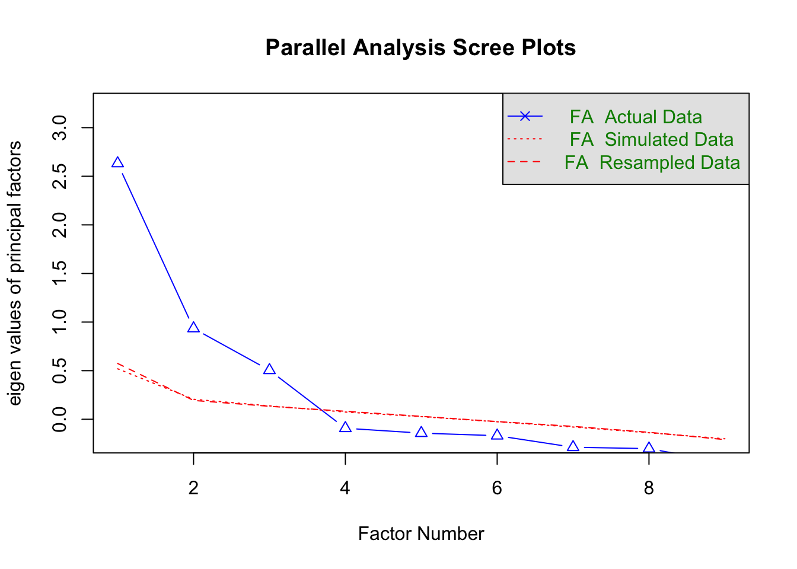

library(lavaan)
library(psych)
library(GPArotation)4 Exploratory Factor Analysis
Note
You can download the R code used in this lab by right-clicking this link and selecting “Save Link As…” in the drop-down menu: exploratoryfactoranalysis.R
4.1 Loading R Packages
Remember, you only need to install a package once. But if you want to use the functionality of a package, you will need to “load” the package into your environment. To do that for lavaan (and the psych and GPArotation packages, which we’ll also use in this lab), we use the library() function:
4.2 Loading data into our environment
We’re using the same dataset as we used in the CFA R Lab, so we can use the data() function like we did before:
data("HolzingerSwineford1939")Remember that for the CFA analysis, we did not have to remove any variables from the data frame, because lavaan extracted the relevant variables automatically. With EFA, using the psych package, we have to do that extraction ourselves. We can do that as follows:
# print the variable names of the full data frame
# and locate the relevant variables
colnames(HolzingerSwineford1939) [1] "id" "sex" "ageyr" "agemo" "school" "grade" "x1" "x2"
[9] "x3" "x4" "x5" "x6" "x7" "x8" "x9" # use the [,] operator to select only the relevant
# columns/variables (here in column 7 to 15)
HSdata <- HolzingerSwineford1939[,7:15]There are many other ways of selecting variables from a larger data frame, and if you have a different method that you like better, feel free to use it!
4.3 EFA Step 1: How many factors should I extract?
In the first step of the EFA, we will use parallel analysis to see what the algorithm identifies as the optimal number of factors to extract from the data. This algorithm generates random correlation matrices, and when doing so, it may return an error message because something went wrong with those random matrices. If this happens, you can simply re-run the fa.parallel() function and the error should disappear.
The code below will return a parallel analysis for the Holzinger Swineford data using the factor analysis method and based on 50 random correlation matrices. You can increase that number to 100 or 1000 if you want to be more certain of the results, but note that that will take longer to run.
fa.parallel(HSdata, fa = "fa", n.iter = 50)
Parallel analysis suggests that the number of factors = 3 and the number of components = NA Based on the plot, how many factors should we extract?
4.4 EFA Step 2: Factor Extraction and Rotation
In the first cycle of the EFA process, we will follow the parallel analysis results and estimate a 3-factor EFA. To estimate the parameters and rotate those results to be more interpretable, we just need to use one function:
efa_3f <- fa(HSdata, nfactors = 3,
fm = "minres",
rotate = "oblimin")Technically, you don’t even need to include fm = "minres", rotate = "oblimin", but I wanted to show you what arguments you need to use if you want to change the default estimation method (here “minres”) or if you want to change the default rotation method (here “oblimin”).
4.5 EFA Step 3: Interpreting the EFA estimates
Commmunalities
round(efa_3f$communalities,
digits = 3) x1 x2 x3 x4 x5 x6 x7 x8 x9
0.477 0.255 0.453 0.728 0.754 0.691 0.519 0.520 0.460 Most communalities are between .4 and .6 (one even above .6), indicating that the factors are able to account for a good chunk of the variability in the item responses. One exception is x2, which has a communality of .255. Overall, these values look acceptable.
Factor Loadings
It can be helpful to hide low factor loadings from your output to see if the factor extraction and rotation has resulted in a simple structure. We can do that by including cutoff = .3 in the print() function:
print(efa_3f$loadings,
cutoff = .3)
Loadings:
MR1 MR3 MR2
x1 0.592
x2 0.509
x3 0.686
x4 0.846
x5 0.886
x6 0.805
x7 0.737
x8 0.686
x9 0.382 0.456
MR1 MR3 MR2
SS loadings 2.197 1.275 1.239
Proportion Var 0.244 0.142 0.138
Cumulative Var 0.244 0.386 0.523The factor loadings appear to follow a pretty clear, simple structure. The exception is x9, which has a factor loading > .3 on two factors.
This output also includes information about the variance in the items that is explained by each factor. SS loadings refers to the sum of the squared loadings (i.e., the factor’s Eigenvalue). The columns (even in the loadings table) are sorted from the highest Eigenvalue to the lowest. That’s why the order here is MR1, MR3, and then MR2 (and MR refers to the estimation method, minres). The second row shows the variance that is accounted for by each factor, and the bottom row shows the cumulative variance accounted for by all factors. Here, the three factors explain 52.3% of the variance in the items.
Note: if you want to see all the factor loading estimates, you need to set the cuttof at the lowest possible value for factorloadings (-1):
print(efa_3f$loadings,
cutoff = -1)
Loadings:
MR1 MR3 MR2
x1 0.196 0.592 0.031
x2 0.043 0.509 -0.122
x3 -0.062 0.686 0.019
x4 0.846 0.016 0.008
x5 0.886 -0.065 0.007
x6 0.805 0.080 -0.013
x7 0.044 -0.152 0.737
x8 -0.034 0.125 0.686
x9 0.032 0.382 0.456
MR1 MR3 MR2
SS loadings 2.197 1.275 1.239
Proportion Var 0.244 0.142 0.138
Cumulative Var 0.244 0.386 0.523Factor Correlations
Finally, we can look at the correlations between the factors:
round(efa_3f$Phi,
digits = 3) MR1 MR3 MR2
MR1 1.000 0.323 0.213
MR3 0.323 1.000 0.261
MR2 0.213 0.261 1.000Extremely large correlations between factors may be an indication of overextraction; the two factors could be combined into one factor. In this case, the correlations between the factors are small to moderate, indicating that they are tapping into distinct but correlated subconstructs.
4.6 EFA Step 4: Comparing to other factor solutions
To understand if the three-factor model makes the most sense, it is typical to also estimate an EFA with one factor less and one factor more to see if those analyses result in more clearly interpretable results. Let’s start by estimating a two-factor EFA.
Two-Factor EFA
efa_2f <- fa(HSdata, nfactors = 2,
fm = "minres",
rotate = "oblimin")Interpreting the results of the Two-Factor EFA
round(efa_2f$communalities,
digits = 3) x1 x2 x3 x4 x5 x6 x7 x8 x9
0.341 0.100 0.223 0.728 0.708 0.705 0.179 0.381 0.545 Many of the communalities are low, indicating that this factor solution does not do a good job of accounting for variability in the items.
print(efa_2f$loadings,
cutoff = .3)
Loadings:
MR1 MR2
x1 0.430
x2
x3 0.449
x4 0.851
x5 0.854
x6 0.828
x7 0.434
x8 0.640
x9 0.736
MR1 MR2
SS loadings 2.244 1.588
Proportion Var 0.249 0.176
Cumulative Var 0.249 0.426Although there are no cross-loadings, one item (x2) doesn’t have a loading > .3 on either of the factors! These two factors cannot capture the variance in x2 that is common with the other items.
round(efa_2f$Phi,
digits = 3) MR1 MR2
MR1 1.00 0.34
MR2 0.34 1.00The factor correlation does not indicate any issues.
Four-Factor EFA
efa_4f <- fa(HSdata, nfactors = 4,
fm = "minres",
rotate = "oblimin")Interpreting the results of the Four-Factor EFA
round(efa_4f$communalities,
digits = 3) x1 x2 x3 x4 x5 x6 x7 x8 x9
0.454 0.230 0.554 0.740 0.787 0.687 0.995 0.424 0.568 Compared to the three-factor EFA, the communalities have not changed a lot, except for the communality of x7, which is now a whopping .995. Such a high communality indicates that there is a factor (or combination of factors) that can account for almost all variability in x7. Although this may sound good, it may stand in the way of our goal of dimension reduction (as we’ll see next).
print(efa_4f$loadings,
cutoff = .3)
Loadings:
MR1 MR2 MR3 MR4
x1 0.453
x2 0.397
x3 0.735
x4 0.850
x5 0.887
x6 0.804
x7 0.986
x8 0.499
x9 0.674
MR1 MR2 MR3 MR4
SS loadings 2.216 1.089 0.954 0.787
Proportion Var 0.246 0.121 0.106 0.087
Cumulative Var 0.246 0.367 0.473 0.561When asked to estimate four factors, the EFA algorithm resulted in a factor that only represents one item (x7). This one-to-one association gets in the way of our goal of dimension reduction, and is an indication that this factor solution is not appropriate.
round(efa_4f$Phi, digits = 3) MR1 MR2 MR3 MR4
MR1 1.000 0.122 0.250 0.286
MR2 0.122 1.000 0.046 0.417
MR3 0.250 0.046 1.000 0.436
MR4 0.286 0.417 0.436 1.000Factor correlations indicate that there is no extremely strong correlation (\(r = .417\)) between the factor that represents x7 and the factor that represents x8 and x9 (these three items are hypothesized to measure one subconstruct: speed). This indicates that, although these three items share some common variance, they also tap into distinct sub-subconstructs that may need to be explored further.
4.7 Some Final Conclusions
For this sample, a three-factor solution appeared to best balance dimension reduction and representing the associations among the observed variables. However, the results did indicate that there may be an issue with x2 (low communality) and x9 (cross loading). In addition, the four-factor EFA seemed to indicate that the three items measuring speed are not as related as we’d hoped they’d be. A second sample could indicate whether these findings were due to sampling variability or whether they reflect true issues that need to be resolved.
4.8 Summary
In this R lab, you learned how to specify, estimate, evaluate and interpret EFAs. You also learned how to evaluate different sources of information about the appropriateness of the EFA solutions.